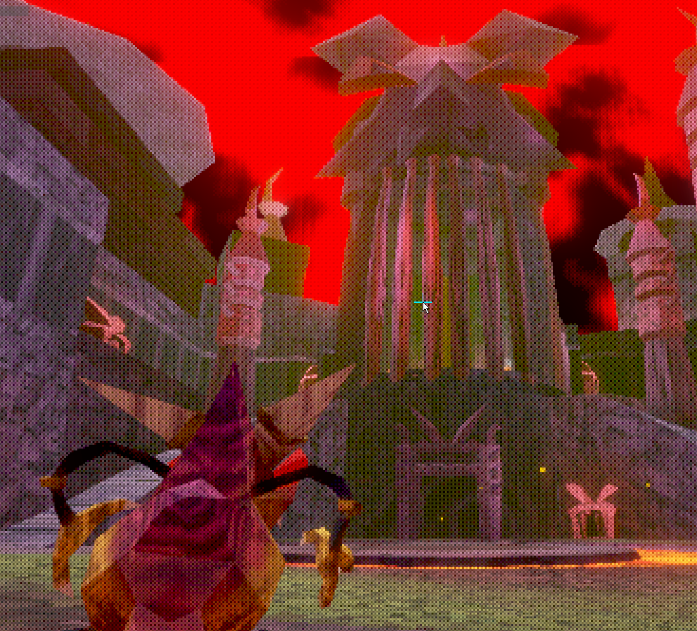
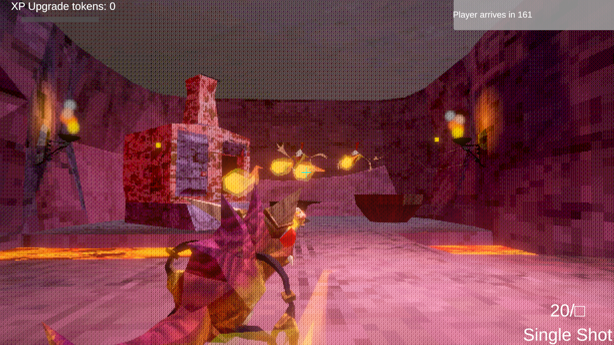

Opps, I need all your XP

Description
Farm your dudes before the "Player" creates a storm of destruction.
Controls:
Space to jump, and double jump
C or left control to crouch, for some reason
WASD to move
Tab to pause
Hold space to skip the cutscene
If the sensitivity is too low, it will be, please hit pause and change it.
Credits:
Bugmage - Art, vision, design, sounds
Illogical - Code, design, sounds
Weston Wright - Shaders
Changelog:
Fixed enemies not agro-ing you
Fixed enemy not being enabled, (GIT!!!!!)
Screenshots & Images


Play The Game
Feedback & Comments
"I loved the PS1 vibe from the graphics and the roguelite-esque powerups. Noticed a couple places where I got stuck in some objects but was able to wiggle my way out. Overall very unique entry, great work! Congrats and good luck!" - Copperhead Game Studios
"cool game, I wish I could play more but I kept running into a bug where everything just stopped, enemies, projectiles, exp, and timer" - Muhammad Mustafa
"It was great but I don't know if it's a Linux thing or something but my cursor was constantly aiming up which made it WAY harder than it needed to be. But I still won my second attempt! It would have been the first if I hadn't clipped into a wall and got stuck... Great game apart from those bugs!I loved the unique story concept where you play as the boss and have to defeat your own guys to level up to fight the player. Gameplay would have been fun if it weren't for bugs but those were clearly not intentional." - Champpeace
"Short and sweet game, enjoyed it a bunch - the art and opening cutscene are incredible too, I was totally blown away!!!" - superobot1
"I really like the premise, and the gameplay is very good!! I love the wholesomeness behind wanting to help the player level up, and the cutscene was really entertaining :D! I really like the models too! Sometimes when shooting you would shoot behind you when close to a wall, and the cutscene for some reason did not have sound in the executable (it did in the web version, I watched it there first before switching), but those are minor things. This was fun :D!" - FlamesEC
"Hello, hope you enjoyed the jam! Can you try my game? https://itch.io/jam/brackeys-12/rate/2966622" - yuhlevi
"That was such a cool experience! Absolutely adore the opening cinematic, I love Minion. He must be protected. The game itself is fun, concept is cool, mechanics are well done. The only very slight criticism I can think of is that the camera sometimes goes behind walls but that's such a minor thing, and so easy to fix It doesn't really matter at all x3 Great job!" - CryptidGrove
"Some cool cutscene work, short but fun game, good work!" - Producer Life
"You have a CUTSCENE?!? How did you manage to make this in 7 days? As someone who's never made a 3D game before, this is unfathomable. The gameplay feels very good too. Only two things I can criticize are that the movement could be a bit better and the camera got kind of janky sometimes but that is totally understandable. I loved the style as well. Overall, very solid entry, congrats!" - ilker12
"The cutscene at the start was a lot of fun, and the art style was really fun and fitting for a group of monsters. I might have gotten stuck inside of a barrel pretty quickly by using my lil double jump. Love the aesthetic of this game, and hope to see more from this team!" - BiggestBoof
"This game is suprisingly good, I can't wrap my mind around how you did this in such a short time but you're a legend man!" - imKoyu
"I LOVE HOW IT LOOKS!!! The designs are all so cool, and the artstyle of it all is so charming! I had some issues where I couldn't buy any upgrades after a certain point and infinite loading after defeating the \"player\", but it was all worth it to see how cool it looks in my opinion. Great job!" - Berc
"Incredibly suprising ! That felt way too good for a jam game. I only encountered 3 issues : Freeze in the middle of the intro cutscene, not being able to get the trishot for some reason, and the infinite loading after killing the player. Overall really good stuff you made there, clean !" - Ednaval
"AWESOME! This feels amazing for a game jam game. Incredible job! At one point when killing, i think a human, a black loading screen covered half of my screen and didn't go away, so i sadly couldn't continue" - Bas
"HOW ON EARTH DID YOU MAKE THE CUTSCENE?????????? Also the artstyle is pretty good, but when you defeat the \"Player\" it just gives me a black screen and says \"Loading...\". What am i supposed to do? Also can you check out my game? I'm 13 and some feedback or a comment would be appreciated" - hvaaaaaad
"Having a cutscene in a game jam entry is crazy level of flexing. I love the artstyle so much, the animations are amazing and shooting feels good. Honestly my favorite entry I've played so far" - jijigri
"Ok nice, crashed when trying to die haha, but had a great shooting. I like the style, different from others, nice story (skipping with space works btw ;) ). Nice animations and environment vibe. Overall cool game. Didn't get the link to much with the theme. Try Tornad.io and leave a comment about what you think about it! https://itch.io/jam/brackeys-12/rate/2973771" - Zmadnesss
"Thanks for helping with some quality assurance here. I took a look at your game. I love the thumbnail art and the vibe of your game. It fits the theme very well. We intended our game to be about leveling up for the big boss fight. But that is a bit of a stretch." - IllogicalDesignsDeveloper
"After the cutscene it stays black for me? I can pause the game and stuff.. but nothing happens? Did I do something wrong?" - Zmadnesss
"Unfortunately not, its supposed to load the main game level" - IllogicalDesignsDeveloper
"you can still update it now you submitted, keep me updated :)" - Zmadnesss
"Uploaded a new version with tighter timing on the cutscene. You can also hold space to skip, but this is not explained." - IllogicalDesignsDeveloper
"trying it out" - Zmadnesss